Challenge 6: "magic"
Challenge 6 presents an ELF file simply named 'magic'. ELF is a format specific to Linux similar to how PE is a format specific to Windows. It is also 64 Bit! Its important for the sake of reversing and reading this tutorial to understand that registers starting with 'R' represent 64 Bit registers, and those starting with 'E' represent 32 Bit registers. It is normal to reference 32 and 64 Bit registers interchangebly depending on what data is stored in them.
The easiest starting point is to run strings on this file. right away there are some strings that seem to point towards input prompts, success conditions, and fail conditions.
STRINGS:
No soup for you!
Failed to read file
Could not write file!
Run, Forrest, run!!
Generated first permutation!
Welcome to the ever changing magic mushroom!
%d trials lie ahead of you!
Challenge %d/%d. Enter key:
Congrats! Here is your price:
Lets take a look at where some of these strings are called. We can open this in IDA and it will automatically find the xref's to the data and put it beside the string. If we click our prompt string 'Challenge %d/%d. Enter key:' we are taken to the 'main' function for this program. This function appears to have 2 parts. The first of which XOR's the static string 'Run, Forrest, run!!' against itself(kind of), then uses the result as an input to the API call 'srand' which is used to seed srand. Then there is a call to sub_402d47, the return of which is compared to be zero or non-zero. if the result is non-zero it leads to a stop condition and prints out the text 'Generated first permutation'. The zero condition leads to prompt text. Since this whole sequence appears to happen before our prompt text, we wont bother to analyze it until it proves to be more relevant.
The second part(shown below) has a large loop that runs 666 times and contains what look to be our prompt strings 'Welcome to the ever changing magic mushroom!', '%d trials lie ahead of you!', 'Challenge %d/%d. Enter key:', as well as our success string 'Congrats! Here is your price:'. This is likely our flag and we can follow the data to see where it is manipulated. I have renamed this string 'answer_string' in IDA. At the beginning of MAIN, we see a number of hex bytes pushed onto the stack in sequence starting with the location of answer_string. This looks to be our encrypted/obfuscated answer.
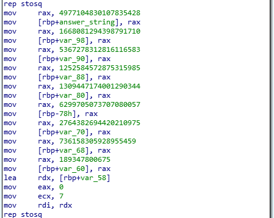
encrypted flag in IDA
The only place where answer_string is manipulated is in a small loop not long after we input a key. This loop XOR's every character of our answer key with every character at a location used as an input buffer in a call to 'fgets' earlier. So our answer is being XOR'd against all 666 keys that we are expected to input.
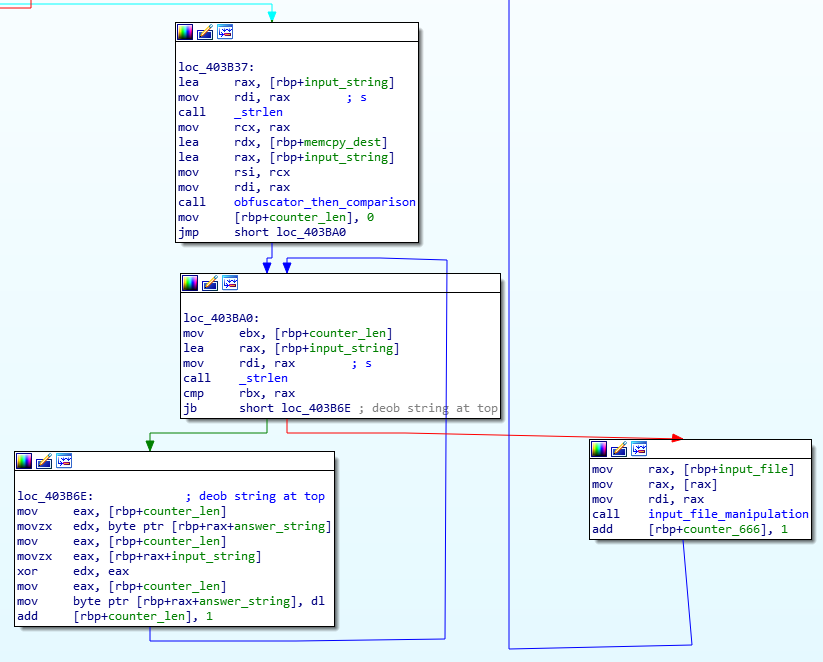
flag decryption code
One of my favorite things to do for CTF's is to find the failure condition and pivot off of that. Most of the time the failure condition will be very near the part of the code that compares your input to whatever the code uses to decide whether the input is correct or not. The same method can be used in real malware if anti-VM/anti-analysis techniques are plagueing your analysis. Let's run this and give it a bad input to see what it outputs for failure.
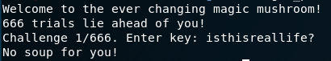
fail strings
'No soup for you!' is a string that we've found. We can xref this to find the function that uses this string, then xref that function to see what calls that. In this case the function that calls our failure string is small and only serves the purpose of printing our failure string and calling '_exit' to exit our program. I've renamed this function to 'Fail_Condition'.
If we xref Fail_Condition, we have 2 places where it is called. both of which are within the same function. This function contains a loop which runs 0x21(decimal 33) times and only breaks that loop when 1 of the 2 jumps leads to our Fail_Condition or once it has completed all 33 loops.
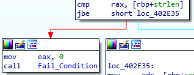
...
...
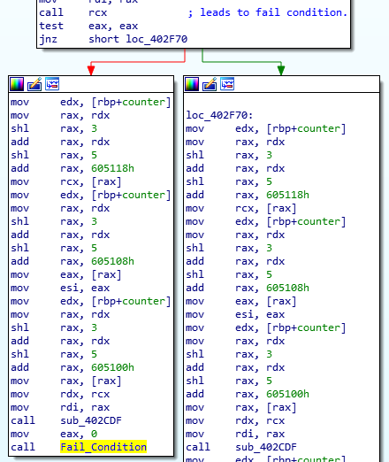
jumps leading to fail conditions
If we xref this function which contains this loop(currently named sub_402DCF). We'll will find that this is the function called right after we take our input, and right before we use that input to XOR our static string which we expect to be the flag. This confirms that we've found the code that decides whether our input is correct or not. I named this function 'obfuscator_then_comparison'. The 'obfuscator' part of the name will make sense later. There are 2 comparisons that are made that will lead to Fail_Condition, so we need to analyze and understand those comparisons.
The first comparison is between a variable which came from an argument previously set to RSI, and a some value placed into RAX just before the comparison. We can follow where RSI was set in the function that called this one and find that the return from a call to '_strlen' with the argument of our input_string passed is the value that passed and eventually compared against. This looks to be a rather normal string length comparison, so we can expect that whatever is in RAX during our comparison, is some static string length for our answer.
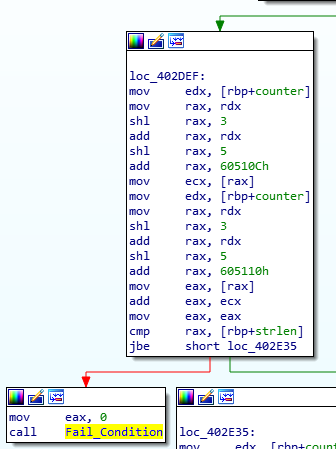
pointer generation before string length compare
There is something important to note about how RAX is set though. In this order, our code
- Moves the loop counter into RAX.
- Bitwise shifting that value in RAX left by 3, effectively multiplying it by 2 to the 3rd power (RAX*2^3).
- Adding the value in RDX which at this time is equal to the normal counter value.
- Bitwise shifting the value in RAX left by 5, effectively multiplying it by 2 to the 5th power (RAX*2^5).
- Adding the static value 0x60510c to RAX.
- Then dereferencing RAX, and moving the value into ECX.
This happens twice with two different but very close static values, then the result of both operations are added together and used in our comparsion.
There are 2 interesting things here. The static values 0x60510c and 0x605110 that are added to the manipulated counter value, and the fact that the result of these operations are then dereferenced. Only pointers can be dereferenced. We see very similar operations happening before our second comparison but with different(but still close) static locations. This means there is data at 0x605100 that is used to validate our input, with offsets +0x0c and +0x10 relating to our string length. We need to take a look at this location.
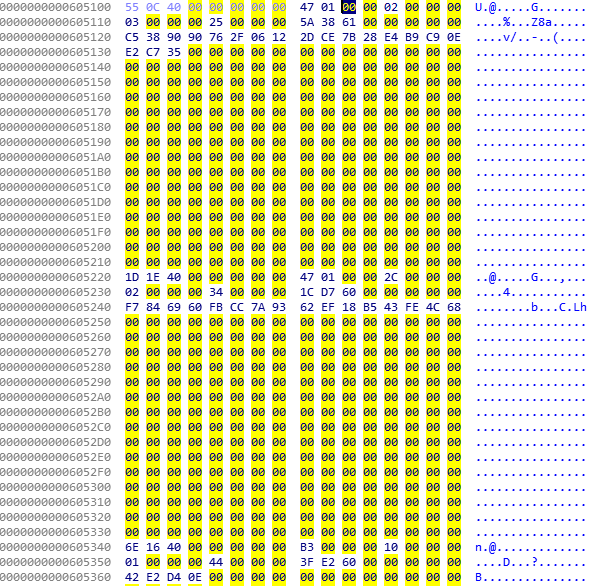
answer block
We appear to be right about this location containing data. If we count the number of blocks(separated by a large number of 00's) we'll count exactly 33 entries. We know the values at 0x60510c and 0x605110 will be added together on the first loop, since the loop counter would be 0 and the result of the bitwise shifts would still result in 0. We also know the result of the addition of these values is compared to our string length. So our first string length to be compared would be 5 (2+3=5). Then on our second loop our string length to compare would be 0x2e or decimal 46 (0x2c+2). If we continue down analyzing the different values, we'll notice that our string length is 0x46(decimal 70) which is over 33(our loop counter max) and that the values at the offsets +0x10 (meaning 0x605110, 0x605230, etc.) is always between 1 and 3. If you add these numbers up, you'll find that it equals the the same value that is the largest number that will be compared at the first comparison, which is the length of the string.
For the rest of this article, i'll be refering to this data section as the 'answer block' and each entry within this answer block as 'sub blocks'.
Now we have figured out that the first comparison checks that the length of our string is at least as long as the location we are checking.
The second comparison looks very similar to the first, except this one loads a few arguments into registers then makes a call to RCX, which will run code in the memory location stored in RCX. After this call to RCX, the return value stored in EAX will be tested (test eax,eax) which effectively sets the Zero flag if EAX is equal to 0, and does not set the Zero flag if EAX is non-zero. With our jump being a 'JNZ'(Jump if Not Zero) and our Fail_Condition being no jump, this means a 0 return from the call to RCX sends us to Fail_Condition, and a non-zero(1 to infinity) return will continue execution. This operation is likely checking our input for correctness, but we need to confirm that.
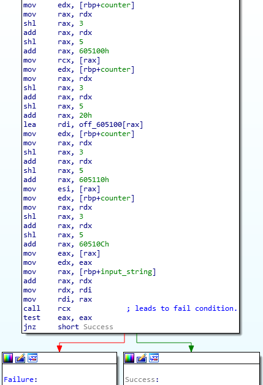
pointer generation before call RCX
Typically arguments are passed on the stack and are pushed soon before a call. In this case arguments are being passed in the registers. On Linux systems, the order that registers will be used is RDI, RSI, RDX, RCX, R8, and R9. being that we are seeing RDX set, we should assume that the value in RSI is a relevant argument as well. RCX is used to hold the location of our function and therefore cannot be an argument.
Lets look at what is passed as arguments to the call to RCX and where RCX is set.
- RDI is set to the value of the location of our input string added to the value at offset +0x0c. This is setting the location of the character or substring to be compared. This makes it clear that offset +0x0c is the location of the substring to be compared.
- RDX is set from the manipulation of our counter with 0x20 added, then the location of that value plus 0x605100 is stored into a register to later be moved to RDX. When our counter is 0, RDX will be set to the value 0x605120. We can only assume the data at this location is our obfuscated answers.
- RSI is pulled straight from offset +0x10. This would make sense to be the length of the substring to be compared, since we saw it added to +0x0c earlier and compared against string length.
- RCX is set as the value sitting at offset +0x00. This means the location of our comparison code is sitting in our answer block.
If we take the time to look at the locations within our offsets +0x00(which will be loaded into RCX), we'll notice that the code is not readable. The code that is used to compare our input to the correct answer is deobfuscated/decrypted before our call to RCX, then reobfuscated/encrypted after the call to RCX.
Luckily, we dont actually need to know how our values are being compared. Since we know that the return from the call to RCX is non-zero when our answer is correct. We can brute force this since we would only be brute forcing substrings, which we've seen to be at most 3 characters long. But this would only give us 1 key out of 666. We need to know what the answer block looks like for the second key. It could be the exact same, or it could be changed. The simple way of doing this is enter some arbitrary string 70 characters long and unsetting the Zero flag so that the loop will continue executing. Once you get past the 33 loops, you'll receive the prompt asking for key 2/666.
For ease, i dumped the whole answer block for both the first execution and the second execution and look at them. You may notice in looking at both answer blocks that the all the parts of each sub block that contain the answers to each substring exist between both answer blocks. The only part that changes between answer blocks is value held in offset +0x0c (which we know to be the start location of the substring) and the physical location of the sub block within the answer block. The location of code that is called in our call to RCX changes, but we are not interested in analyzing the code at those locations so it doesn't matter.
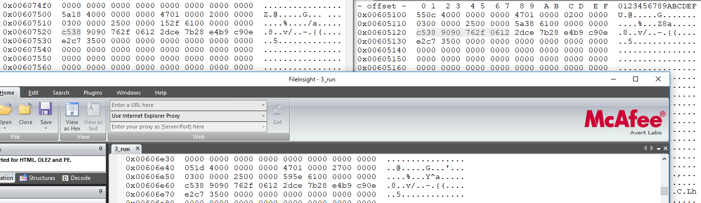
answer blocks for different version of the binary
This means, if we can dump the answer blocks for 666 different executions starting with a known answer block (hash of the binary) we can brute force each substring of our answer for the first known answer block and create a dictionary with the answer values of each sub block mapped to the results of our brute force. So we would be creating a dictionary of the stored obfuscated answers within each sub block to the substring answer gathered through the brute force. Then we could use that dictionary to generation correct answer strings for all 666 keys, and feed them back into the program. We would have to make sure we have the same starting point every time since we see that the binary changes. This will be verifiable by getting the sha256 of the binary before each execution. If the hash is not our known starting point then we will destroy the binary and copy over a backup which matches the known hash.
The hash of the binary that was downloaded was '9BD096FFFA9C500066FE5C7FBCE820CD302DEC0AE879AE78DC46FB831B6D5C80' so before every execution, we'll verify the hash or copy over a backup which matches this hash.
First we need to dump 666 answer blocks. Rather than sitting in a debugger myself and continuously setting the Zero flag so that execution continued every single time(which would be 33*666 times), I decided to script it. I used Python3,
r2pipe, and some easy binary patching. Since we know that our 'test EAX,EAX' checks if the register is zero or non-zero, The patch was simply changing our 'test EAX,EAX' to check a register that is never zero. In this case EBX is always 14 before and after the call to RCX. So we patched the comparison to 'test EBX,EBX' so that we never fail.
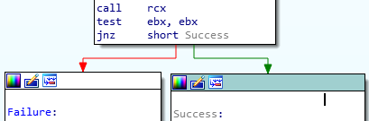
patch showing a binary that will not fail
Next we need to script the running of our patched binary(named magic_patched on my host) and dump the answer block after each execution. Code for this is below.
- The script uses r2pipe to load our patched binary in debug mode(-d) with a debug profile(magic_patched.rr2) that told r2 to accept stdin from a file supplied(stdin=magic_patched_input.txt). This file just had 70 random characters, since we patched the binary, it doesn't matter what we input.
- The script sets a breakpoint(db) at a spot in the binary that we know the answer block will have been changed from the last execution.
- The script will loop 666 times continuing execution(dc), seeking to to location of the answer block(s), and writing the answer block to a file(wtf)
rad_dumper.py
#!/usr/bin/python3
import r2pipe
import time
r2 = r2pipe.open("magic_patched",flags=['-e','dbg.profile=magic_patched.rr2','-d'])
r2.cmd('db 0x403b5a')
for a in range(1,667):
r2.cmd('dc')
time.sleep(.25)
r2.cmd('s 0x605100')
r2.cmd('wtf {}_run.txt 0x2500'.format(a))
r2.quit()
print('end')
magic_patched.rr2
#!/usr/bin/rarun2
stdin=magic_patched_input.txt
Now we need to brute force our first answer block to create our dictionary. We will be using r2pipe and Python3 for this as well. The code is too long to include in more than just a link, but I will describe it and provide a link to the actual code below. The code contains enough commenting that it should be easy to follow.
Script:
rad_magic.py
In short, The brute forcer sets breakpoints before and after the call to RCX(the comparison functions). Upon first execution, the code will dump the values stored in all registers to local variables. It will take our substring length from the dumped registers and enter a for loop which will generate our brute force substring from valid ASCII characters(0x20-0x7f) and write those brute force substrings to the location where our input string is stored on the stack of the debuggee. It will then continue execution through the call to RCX and hit a breakpoint after that call. At this point it can check the value of RAX to see if the guess was correct. The register is equal to 1 if it is correct and 0 if it is not. If the answer was correct we print the answer and stop execution. Otherwise we continue the loop, set the registers back to their state just before the call to RCX, set the instruction pointer(RIP) back to the location of our call to RCX, then run it again.
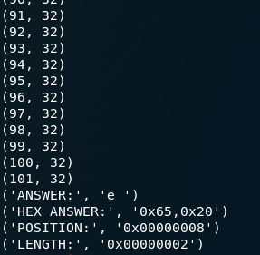
brute forcer printing answer
This was mostly reliable and limited me to only brute forcing one substring at a time, which actually wasn't that slow, and it allowed me to watch over the brute forcer and validate answers. There were only 2 times where this method failed. For both of these cases i was able to step into the call to RCX with the debugger and reverse the code manually. In both of these cases i was lucky the comparison algorithms were simple XOR's against static values so they weren't difficult to reverse. Because it wasn't difficult to do manually, i never bothered to understand why the brute forcing method failed for this check in particular.
All this leaves us with the dictionary shown below.
answer_dict = {
"c5389090762f612" : ["d","s"," "],
"f7846960fbcc7a93" : ["i","n"],
"225b8f234851b1f5" : ["h","o","t"],
"88f824561ea6e145" : ["e"," "],
"e2c73500000" : ["Z"],
"9b99d615f3c62a" : ["o","w"],
"42e2d4e0000" : ["."],
"ad2d8400000" : ["n","g"," "],
"af26000000" : ["l","l"],
"532a000000" : [" "],
"81757200000" : ["t","h","e"],
"6b42600000" : ["A","h",","],
"740000000" : ["g"],
"7f0000000" : ["r"],
"4fa000000" : ["e"," "],
"4f0000000" : ["e"],
"b6d55cc50000" : ["a","c","e"],
"532376300000" : [" ","y","o"],
"767b000000" : ["i","n"],
"a484600000" : [" ","b","l"],
"4445000000" : ["n","o"],
"a62000000" : [" ","H"],
"827f000000" : ["u","r"],
"4359000000" : ["i","s"],
"5e424300000" : ["t","h","i"],
"200000000" : [" "],
"6c696b00000" : ["l","i","k"],
"6f66000000" : ["o","f"],
"660000000" : ["f"],
"20696e00000" : [" ","i","n"]
}
Python cuts off leading zeros on any hex digit so the dictionary has to do the same to any hex digit with a leading zero. This leaves the dictionary functioning but funny looking.
Last thing to do is to write the code that generates all of our passwords off of this dictionary table and our 666 dumped answer blocks. The code to do this is again too long to include here so i've placed a link to the code.
Script:
runnerator.py
Runnerator.py is effectively a for loop running 666 times which loads each answer block dump and extracts the substring starting point, substring length, and the first 8 bytes of the part of each sub block which contains the obfuscated answer. It will compare the first 8 bytes of the obfuscated answer against the answer dictionary which is shown above. There is only 1 edge case where the first 8 bytes for two different substrings have the first 8 bytes being the same. For this edge case I set the value equal to "Z"("e2c73500000" : ["Z"],) in the answer dictionary as a trigger. There is code after the point where the answer is correlated that will check if the correlated answer is "Z". If it is then it will grab the 9th byte and check if it is equal to 0xA0. If it is then it will re-correlate our answer to " ","w"(0x20,0x77), otherwise it will set it to " "(0x20).
Running runnerator.py gives us the
answer list which we can feed into the original magic binary with hash '9BD096FFFA9C500066FE5C7FBCE820CD302DEC0AE879AE78DC46FB831B6D5C80' and our answer will be decrypted and printed out to us!
Answer:
mag!iC_mUshr00ms_maY_h4ve_g!ven_uS_Santa_ClaUs@flare-on.com
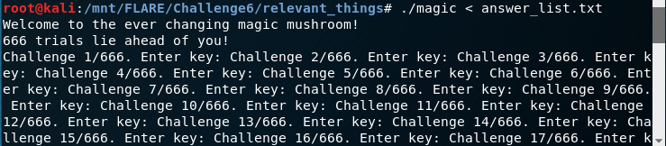
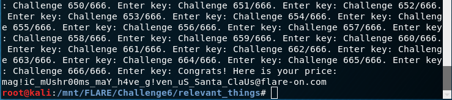
answer list and flag